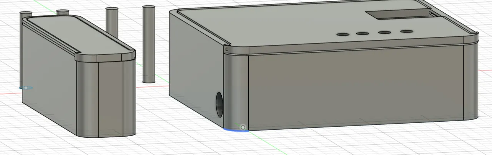

返回硬件项目索引
返回硬件项目索引洗衣机取衣提醒装置
阅读项目文档 ↓本项目是一款宿舍洗衣机取衣提醒装置，针对洗衣机仅提示一次、易忘取衣、影响室友使用的问题设计。设备基于ESP32主控，采用震动与声音双传感器融合判断洗衣结束，搭配按键归属选择、OLED显示和分级蜂鸣提醒，能够智能分时段提醒取衣，有效提升宿舍洗衣机使用效率。


项目文档
项目介绍
项目介绍
项目概况
项目名称：洗衣机提示装置
mentor：徐奕
项目简介
本项目是一款宿舍洗衣机取衣提醒装置，针对洗衣机仅提示一次、易忘取衣、影响室友使用的问题设计。设备基于ESP32主控，采用震动与声音双传感器融合判断洗衣结束，搭配按键归属选择、OLED显示和分级蜂鸣提醒，能够智能分时段提醒取衣，有效提升宿舍洗衣机使用效率。
---
项目成长
构建"迭代与改错"记录，可仅截屏展示
嵌入式代码
Plain Text
include <Arduino.h>
include <Wire.h>
include <Adafruit_GFX.h>
include <Adafruit_SSD1306.h>
include <WiFi.h>
include <HTTPClient.h>
include <WiFiClientSecure.h>
include <base64.h> // Arduino base64 编码库
include "config.h"
// ============ 钉钉机器人配置（必填） ============
// 1. WiFi 配置
const char* WIFI_SSID = "HiWiFi_55BD5E";
const char* WIFI_PASSWORD = "sywsxy123";
// 钉钉机器人配置
const String DINGTALK_KEYWORD = "提醒"; // 必须与钉钉机器人安全设置中的关键词一致
const String DINGTALK_SECRET = "";
// @设置（可选）
const String AT_MOBILES = "";
// ============ 对象声明 ============
Adafruit_SSD1306 display(SCREEN_WIDTH, SCREEN_HEIGHT, &Wire, OLED_RESET);
// ============ 系统状态变量 ============
enum SystemState {
STATE_OFF, // 关机状态
STATE_IDLE, // 开机待机
STATE_WORKING // 工作中
};
SystemState currentState = STATE_OFF;
unsigned long buttonPressStartTime = 0;
bool longPressDetected = false;
int lastDisplayNumber = 0;
// ============ 报警状态变量 ============
unsigned long lastAlarmTriggerTime = 0; // 上次触发报警的时间
int alarmCount = 0; // 当前报警次数
bool alarmActive = false; // 报警是否激活
unsigned long lastAlarmSoundTime = 0; // 上次蜂鸣器发声时间
// ============ 蜂鸣器非阻塞控制变量 ============
bool buzzerActive = false; // 蜂鸣器是否正在发声
unsigned long buzzerStartTime = 0; // 蜂鸣器开始时间
unsigned long buzzerDuration = 0; // 蜂鸣器持续时长
unsigned long buzzerLastToggleTime = 0; // 上次切换电平的时间
bool buzzerState = LOW; // 蜂鸣器当前电平状态
// ============ 按键状态管理 ============
struct ButtonState {
int pin;
bool lastState;
unsigned long lastDebounceTime;
bool currentState;
bool stableState;
};
ButtonState buttons[NUM_BUTTONS] = {
{BUTTON_1_PIN, HIGH, 0, HIGH, HIGH},
{BUTTON_2_PIN, HIGH, 0, HIGH, HIGH},
{BUTTON_3_PIN, HIGH, 0, HIGH, HIGH},
{BUTTON_4_PIN, HIGH, 0, HIGH, HIGH}
};
// ============ 传感器状态 ============
bool vibrationDetected = false;
bool soundDetected = false;
unsigned long soundLastTriggerTime = 0;
// ============ 钉钉消息防重发控制 ============
unsigned long lastDingTalkSendTime = 0; // 上次发送钉钉消息的时间
const unsigned long DINGTALK_COOLDOWN = 60000; // 同一报警周期内，钉钉消息最小间隔60秒
bool dingTalkSentForCurrentAlarm = false; // 当前报警周期是否已发送过钉钉
// ============ 函数声明 ============
void updateButtonStates();
void handleLongPress();
void handleShortPress();
void readSensors();
void updateDisplay();
void triggerAlarm();
void handleAlarmPeriodic();
void startBuzzer(unsigned long duration);
void updateBuzzer();
// ============ 钉钉相关函数声明 ============
void connectWiFi();
void sendDingTalkMessage(String content);
String generateDingTalkSign(unsigned long timestamp, String secret);
String urlEncode(String str);
// ============ 初始化 ============
void setup() {
Serial.begin(115200);
Serial.println("System Starting...");
// 连接WiFi（开机即连）
connectWiFi();
// 初始化引脚
pinMode(POWER_BUTTON_PIN, INPUT_PULLUP);
pinMode(BUZZER_PIN, OUTPUT);
pinMode(VIBRATION_SENSOR_PIN, INPUT);
pinMode(SOUND_SENSOR_PIN, INPUT);
for (int i = 0; i < NUM_BUTTONS; i++) {
pinMode(buttons[i].pin, INPUT_PULLUP);
}
Wire.begin(23, 22);
// 初始化OLED
if (!display.begin(SSD1306_SWITCHCAPVCC, 0x3C)) {
Serial.println("SSD1306 allocation failed");
for (;;);
}
display.clearDisplay();
display.setTextSize(1);
display.setTextColor(SSD1306_WHITE);
display.setCursor(0, 0);
display.println("System Ready");
display.display();
// 蜂鸣器初始状态
digitalWrite(BUZZER_PIN, LOW);
delay(1000);
}
// ============ 主循环 ============
void loop() {
// 保持WiFi连接
if (WiFi.status() != WL_CONNECTED) {
static unsigned long lastWiFiCheck = 0;
if (millis() - lastWiFiCheck > 10000) {
Serial.println("WiFi disconnected, reconnecting...");
connectWiFi();
lastWiFiCheck = millis();
}
}
// 1. 处理长按开机/关机
handleLongPress();
// 只有在开机状态下才执行其他功能
if (currentState != STATE_OFF) {
// 2. 更新按键状态（带消抖）
updateButtonStates();
// 3. 处理短按（显示数字）
handleShortPress();
// 4. 读取传感器
readSensors();
// 5. 双重交叉验证触发报警（仅初次激活报警）
if (vibrationDetected && soundDetected) {
triggerAlarm();
}
// 报警激活后持续运行周期提醒逻辑，不再依赖传感器条件
if(alarmActive){
handleAlarmPeriodic();
}
// 6. 更新蜂鸣器状态（非阻塞）
updateBuzzer();
// 7. 更新显示
updateDisplay();
}
delay(10); // 主循环周期
}
// ============ WiFi连接 ============
void connectWiFi() {
if (WiFi.status() == WL_CONNECTED) return;
Serial.print("Connecting to WiFi");
WiFi.begin(WIFI_SSID, WIFI_PASSWORD);
int retry = 0;
while (WiFi.status() != WL_CONNECTED && retry < 30) {
delay(500);
Serial.print(".");
retry++;
}
if (WiFi.status() == WL_CONNECTED) {
Serial.println();
Serial.print("WiFi connected, IP: ");
Serial.println(WiFi.localIP());
// OLED显示WiFi状态
if (currentState != STATE_OFF) {
display.clearDisplay();
display.setTextSize(1);
display.setCursor(0, 0);
display.println("WiFi Connected");
display.print("IP: ");
display.println(WiFi.localIP());
display.display();
delay(1000);
}
} else {
Serial.println("nWiFi connection failed!");
}
}
// ============ 钉钉消息发送 ============
void sendDingTalkMessage(String content) {
if (WiFi.status() != WL_CONNECTED) {
Serial.println("[DingTalk] WiFi not connected, skip sending");
return;
}
// 防重发：同一报警周期内，60秒内只发一次
if (dingTalkSentForCurrentAlarm && (millis() - lastDingTalkSendTime) < DINGTALK_COOLDOWN) {
Serial.println("[DingTalk] Cooldown active, skip sending");
return;
}
WiFiClientSecure client;
client.setInsecure(); // 跳过SSL证书验证（测试用）
HTTPClient http;
// 钉钉要求的时间戳为毫秒级 Unix 时间戳
unsigned long timestamp = millis();
// 如果配置了加签，计算签名并追加到URL
if (DINGTALK_SECRET.length() > 0) {
String sign = generateDingTalkSign(timestamp, DINGTALK_SECRET);
url += "×tamp=" + String(timestamp) + "&sign=" + sign;
}
Serial.println("[DingTalk] Sending message...");
http.begin(client, url);
http.addHeader("Content-Type", "application/json");
http.setTimeout(5000);
// 如果设置了关键词，确保消息内容中包含关键词
String messageContent = content;
if (DINGTALK_KEYWORD.length() > 0 && messageContent.indexOf(DINGTALK_KEYWORD) == -1) {
messageContent = "[" + DINGTALK_KEYWORD + "] " + messageContent;
}
// 构造 JSON 消息体
String jsonPayload = "{"msgtype":"text","text":{"content":"" + messageContent + ""}";
// 添加 @ 设置
jsonPayload += ","at":{"isAtAll":" + String(AT_ALL ? "true" : "false");
if (AT_MOBILES.length() > 0) {
jsonPayload += ","atMobiles":["" + AT_MOBILES + ""]";
}
jsonPayload += "}}";
Serial.println("[DingTalk] Payload: " + jsonPayload);
int httpResponseCode = http.POST(jsonPayload);
if (httpResponseCode > 0) {
String response = http.getString();
Serial.print("[DingTalk] HTTP Code: ");
Serial.println(httpResponseCode);
Serial.println("[DingTalk] Response: " + response);
// 标记已发送
lastDingTalkSendTime = millis();
dingTalkSentForCurrentAlarm = true;
} else {
Serial.print("[DingTalk] Send failed, HTTP Code: ");
Serial.println(httpResponseCode);
}
http.end();
}
// ============ 钉钉加签生成（HMAC‑SHA256 + Base64 + URL编码） ============
String generateDingTalkSign(unsigned long timestamp, String secret) {
String stringToSign = String(timestamp) + "n" + secret;
// HMAC‑SHA256
uint8_t hmacResult[32];
mbedtls_md_context_t ctx;
mbedtls_md_type_t md_type = MBEDTLS_MD_SHA256;
mbedtls_md_init(&ctx);
mbedtls_md_setup(&ctx, mbedtls_md_info_from_type(md_type), 1);
mbedtls_md_hmac_starts(&ctx, (const unsigned char*)secret.c_str(), secret.length());
mbedtls_md_hmac_update(&ctx, (const unsigned char*)stringToSign.c_str(), stringToSign.length());
mbedtls_md_hmac_finish(&ctx, hmacResult);
mbedtls_md_free(&ctx);
// 使用 Arduino base64 库编码
String sign = base64::encode(hmacResult, 32);
// URL encode
return urlEncode(sign);
}
// ============ URL编码辅助函数 ============
String urlEncode(String str) {
String encoded = "";
char c;
for (int i = 0; i < str.length(); i++) {
c = str.charAt(i);
if (c == ' ') {
encoded += "%20";
} else if (c == '+') {
encoded += "%2B";
} else if (c == '/') {
encoded += "%2F";
} else if (c == '=') {
encoded += "%3D";
} else if (c == '&') {
encoded += "%26";
} else if (c == '?') {
encoded += "%3F";
} else if (c == '%') {
encoded += "%25";
} else if (c == '#') {
encoded += "%23";
} else {
encoded += c;
}
}
return encoded;
}
// ============ 长按处理（开机/关机） ============
void handleLongPress() {
static unsigned long lastPressTime = 0;
static bool lastButtonState = HIGH;
bool currentState_btn = digitalRead(POWER_BUTTON_PIN);
// 检测按键按下（低电平有效）
if (currentState_btn == LOW && lastButtonState == HIGH) {
lastPressTime = millis();
}
// 检测按键释放
if (currentState_btn == HIGH && lastButtonState == LOW) {
unsigned long pressDuration = millis() - lastPressTime;
if (pressDuration >= LONG_PRESS_TIME && !longPressDetected) {
// 长按5秒触发开关机
if (currentState == STATE_OFF) {
currentState = STATE_IDLE;
Serial.println("System ON");
display.clearDisplay();
display.setTextSize(2);
display.setCursor(0, 0);
display.println("System ON");
display.display();
longPressDetected = true;
} else {
currentState = STATE_OFF;
Serial.println("System OFF");
display.clearDisplay();
display.setTextSize(2);
display.setCursor(0, 0);
display.println("System OFF");
display.display();
longPressDetected = true;
// 关闭蜂鸣器（如果正在响）
if (buzzerActive) {
digitalWrite(BUZZER_PIN, LOW);
buzzerActive = false;
}
}
}
longPressDetected = false;
}
// 如果按键一直按着但没到5秒，更新状态提示
if (currentState_btn == LOW && (millis() - lastPressTime) >= LONG_PRESS_TIME) {
if (currentState == STATE_OFF) {
static unsigned long lastDisplayUpdate = 0;
if (millis() - lastDisplayUpdate > 1000) {
Serial.print("Long press: ");
Serial.println((millis() - lastPressTime) / 1000);
lastDisplayUpdate = millis();
}
}
}
lastButtonState = currentState_btn;
}
// ============ 按键消抖更新 ============
void updateButtonStates() {
for (int i = 0; i < NUM_BUTTONS; i++) {
bool reading = digitalRead(buttons[i].pin);
if (reading != buttons[i].lastState) {
buttons[i].lastDebounceTime = millis();
}
if ((millis() - buttons[i].lastDebounceTime) > DEBOUNCE_DELAY) {
if (reading != buttons[i].stableState) {
buttons[i].stableState = reading;
}
}
buttons[i].lastState = reading;
buttons[i].currentState = buttons[i].stableState;
}
}
// ============ 短按处理（显示数字1‑4 + 长按停止报警） ============
void handleShortPress() {
static bool prevStates[NUM_BUTTONS] = {HIGH, HIGH, HIGH, HIGH};
static unsigned long pressStartTime[NUM_BUTTONS] = {0, 0, 0, 0};
static bool longPressHandled[NUM_BUTTONS] = {false, false, false, false};
for (int i = 0; i < NUM_BUTTONS; i++) {
// 检测按键按下（低电平有效，且状态稳定）
if (buttons[i].currentState == LOW) {
// 记录按下开始时间（下降沿）
if (prevStates[i] == HIGH) {
pressStartTime[i] = millis();
longPressHandled[i] = false;
}
// ===== 检测长按3秒停止报警 =====
if (!longPressHandled[i] && (millis() - pressStartTime[i]) >= 3000) {
if (alarmActive) {
// 停止报警
alarmActive = false;
alarmCount = 0;
dingTalkSentForCurrentAlarm = false; // 重置钉钉发送标志
if (buzzerActive) {
digitalWrite(BUZZER_PIN, LOW);
buzzerActive = false;
}
Serial.print("Alarm stopped by long press on button ");
Serial.println(i + 1);
// OLED显示停止信息
display.clearDisplay();
display.setTextSize(1);
display.setCursor(0, 0);
display.println("Alarm Stopped");
display.display();
delay(500);
longPressHandled[i] = true;
}
}
// ===== 短按显示数字（下降沿触发） =====
if (prevStates[i] == HIGH) {
int number = i + 1;
lastDisplayNumber = number;
Serial.print("Button ");
Serial.print(number);
Serial.println(" pressed");
// 在OLED上显示数字（长久显示）
display.clearDisplay();
display.setTextSize(4);
display.setCursor(30, 20);
display.print(number);
display.display();
}
prevStates[i] = LOW;
} else {
prevStates[i] = HIGH;
}
}
}
// ============ 读取传感器 ============
void readSensors() {
// 读取震动传感器（低电平触发，根据实际调整）
vibrationDetected = (digitalRead(VIBRATION_SENSOR_PIN) == HIGH);
// 读取声音传感器（高电平触发，根据实际调整）
soundDetected = (digitalRead(SOUND_SENSOR_PIN) == HIGH);
// 输出调试信息（可选）
static unsigned long lastDebugPrint = 0;
if (millis() - lastDebugPrint > 1000) {
Serial.print("Vibration: ");
Serial.print(vibrationDetected ? "YES" : "NO");
Serial.print(" · Sound: ");
Serial.println(soundDetected ? "YES" : "NO");
lastDebugPrint = millis();
}
}
// ============ 初次触发报警（仅传感器条件满足时调用） ============
void triggerAlarm() {
if(alarmActive) return; // 防止传感器抖动重复初始化报警
unsigned long currentTime = millis();
if (vibrationDetected && soundDetected) {
// 首次触发报警
alarmActive = true;
alarmCount = 0;
dingTalkSentForCurrentAlarm = false;
lastAlarmTriggerTime = currentTime;
lastAlarmSoundTime = currentTime;
Serial.println("ALARM ACTIVATED! ");
sendDingTalkMessage("记得拿出衣物！");
startBuzzer(30000); // 响30秒
alarmCount++;
}
}
// ============ 报警周期提醒逻辑，alarmActive为true就持续执行 ============
void handleAlarmPeriodic()
{
unsigned long currentTime = millis();
unsigned long elapsedSeconds = (currentTime - lastAlarmTriggerTime) / 1000;
// ===== 第二次响：触发后5分钟（300秒）
if (alarmCount == 1)
{
if(elapsedSeconds >= 300 &&
(currentTime - lastAlarmSoundTime) >= 30000 &&
!buzzerActive)
{
startBuzzer(30000);
alarmCount++;
lastAlarmSoundTime = currentTime;
Serial.print("Alarm "); Serial.print(alarmCount); Serial.println(" sounded");
String msg = "提醒第" + String(alarmCount) + "次响起，请拿出衣物！";
sendDingTalkMessage(msg);
}
}
// ===== 第三次及以后：每隔1小时响一次
else if (alarmCount >= 2)
{
static unsigned long lastHourlyAlarmTime = 0;
if (alarmCount == 2)
{
lastHourlyAlarmTime = lastAlarmSoundTime;
}
if((currentTime - lastHourlyAlarmTime) >= 3600000 && !buzzerActive)
{
startBuzzer(30000);
alarmCount++;
lastHourlyAlarmTime = currentTime;
Serial.print("Hourly alarm "); Serial.print(alarmCount); Serial.println(" sounded");
String msg = "提醒第" + String(alarmCount) + "次响起，请拿出衣物！";
sendDingTalkMessage(msg);
}
}
}
// ============ 启动蜂鸣器（非阻塞） ============
void startBuzzer(unsigned long duration) {
if (buzzerActive) {
return; // 如果已经在响，不再重复启动
}
buzzerActive = true;
buzzerStartTime = millis();
buzzerDuration = duration;
buzzerLastToggleTime = millis();
buzzerState = LOW;
digitalWrite(BUZZER_PIN, LOW);
Serial.print("Buzzer started for ");
Serial.print(duration / 1000);
Serial.println(" seconds");
}
// ============ 更新蜂鸣器状态（非阻塞） ============
void updateBuzzer() {
if (!buzzerActive) {
return;
}
unsigned long currentTime = millis();
// 检查是否到达停止时间
if (currentTime - buzzerStartTime >= buzzerDuration) {
digitalWrite(BUZZER_PIN, LOW);
buzzerActive = false;
Serial.println("Buzzer stopped");
return;
}
// 每500ms切换一次电平（产生低频方波滴滴响）
if (currentTime - buzzerLastToggleTime >= 500) {
buzzerState = !buzzerState;
digitalWrite(BUZZER_PIN, buzzerState);
buzzerLastToggleTime = currentTime;
}
}
// ============ 更新显示 ============
void updateDisplay() {
// 只有在没有按键按下时才更新状态显示
bool anyButtonPressed = false;
for (int i = 0; i < NUM_BUTTONS; i++) {
if (buttons[i].currentState == LOW) {
anyButtonPressed = true;
break;
}
}
if (!anyButtonPressed && lastDisplayNumber == 0) {
display.clearDisplay();
display.setTextSize(1);
display.setCursor(0, 0);
display.println("ESP32 Sensor System");
display.setTextSize(1);
display.setCursor(0, 20);
display.print("Vib: ");
display.println(vibrationDetected ? "YES" : "NO");
display.print("Snd: ");
display.println(soundDetected ? "YES" : "NO");
// 显示蜂鸣器状态（调试用）
display.setCursor(0, 50);
display.print("Buz: ");
display.println(buzzerActive ? "ON" : "OFF");
// 显示WiFi状态
display.setCursor(0, 40);
display.print("WiFi:");
display.println(WiFi.status() == WL_CONNECTED ? "OK" : "OFF");
display.display();
}
}
电路原理图
机械结构
一个装配图（实物还在打印中）
右边的大盒子装pcb板子，盖子上的方形孔是显示屏露出孔，四个圆柱用来按按键（原谅我的按键选的太短了），大盒子左侧的孔用来通杜邦线，左侧的盒子是杜邦线的收纳盒（杜邦线有点过长，可根据需要调整线在外部的长短，左侧盒子后还有通孔以便露出传感器。
调试与迭代过程
中间调试没有留档，主要调试点是oled屏幕的显示问题。原因是由于刚开始AI用了delay（），导致有时无法读取到按键信号，oled屏幕上无法及时显示出信息。
AI使用说明
AI主要用于写嵌入式代码。